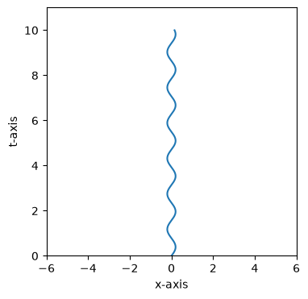
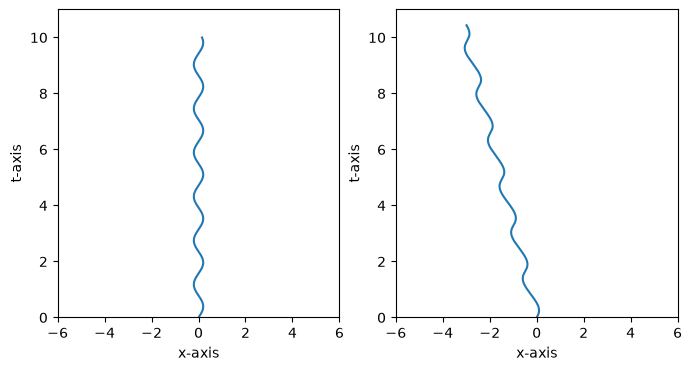

spacetimelib.Worldline Tutorial¶
import spacetimelib as st
import matplotlib.pyplot as plt
import numpy as np
spacetimelib.Worldline allows us to create and manipulate worldlines of particles that change velocity over time, as long as they never exceed the speed of light.
We can map the worldline into a different reference frame that is moving at some constant velocity with spacetimelib.Worldline.boost.
Let’s create a wordline in a 1+1 spacetime that follows $ x = 0.2 sin(4t) $. We’ll generate 300 vertices between the times $ t = 0 $ and $ t = 10 $.
t = np.linspace(0, 10, 300)
x = 0.2 * np.sin(4*t)
events = np.stack([t, x], axis=-1)
w0 = st.Worldline(events)
Let’s plot the worldline we’ve created.
def plotter(ax, w):
out = ax.plot(*w.plot())
ax.set_xlim(-6, 6)
ax.set_ylim(0, 11)
ax.set_xlabel('x-axis')
ax.set_ylabel('t-axis')
return out
fig, ax = plt.subplots(figsize=(4, 4))
plotter(ax, w0)
[<matplotlib.lines.Line2D at 0x7faf11f2e5d0>]

This is a space-time diagram of a particle oscillating back and forth.
Let’s see how this worldline gets warped if we observe it in a reference frame that is moving at velocity 0.3 times light speed in the positive x-axis direction with respect to the original reference frame. We’ll boost the whole worldline by 0.3.
w1 = w0.boost(0.3)
Now let’s look at the plots of the worldline in the original reference frame and the new reference frame, side by side.
fig, (ax0, ax1) = plt.subplots(1, 2, figsize=(8, 4))
plotter(ax0, w0)
plotter(ax1, w1)
[<matplotlib.lines.Line2D at 0x7faf11c64e10>]

TODO: Add a straight worldline that follows the second reference frame.